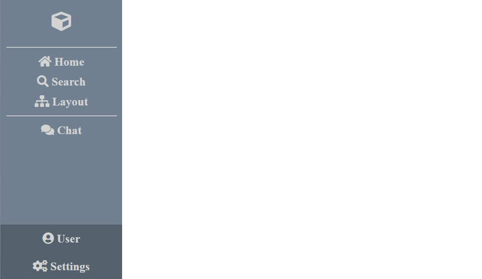

This week, we've got a fairly large usability design topic: Navigation!
When it comes to usability in web design, one of the most essential parts is web navigation. The goal is to have a website supporting a "user-friendly" navigation system, meaning it's clear to the user and simple to follow. To prevent confusion, the flow of navigation should be predictable and well-defined. The user wants ease in exploring and (hopefully) enjoying the product/service conveyed.
I'm glad you asked! The following is a list of common practices of web navigation:
Maintain clear and consistent navigation. The form of navigation should be maintained throughout the site.
Navigation should be predictable to the user. When a user is clicking on a button labeled "contact us", the site should guide them to a contact form and not a page listing types of bagels!
Labels on a website should be meaningful. If you a company selling bikes & unicycles, rather than using a broad term like "products" be more specific like "cycles" or even two seperate tabs "bicycles" and "unicycles".
Don't be overly simple. While last week, I discussed "less is more" with whitespace, there's an extent to which a navbar should be simplistic. It's important to provide the user more than something like a simple "back" button (which my blog implements at the time of writing this blog :P). This will make the site a drag and an inconvenience to the user.
Cater the navigation closely to what the audience desires. Try to think like and target audience and ask "how can I organize this in a way that will be quick and convient for someone who knows what they are looking for or find more information about it?"
Create cues for navigatable elements. Use URLs and buttons to guide the user to new pages. In general, highlighting works well with an undistracting color.
Avoid drop down menus. While drop down menus were popular for a decade or two, it seems more and more they suffer in terms of usability for two reasons:
Now adays, mega-menus are recommended. Mega-menus support a similar hierarchy structure, and make all options visable on the same screen.
Below, I've crafted a code sample showing a very simplistic example of a vertical navbar. In this example, a mostly static vertical navbar was designed using a column-based flex approach. NOTE: The example uses Font Awesome icons from an internal project folder.
<!DOCTYPE html>
<html>
<head>
<title>Navbar Example</title>
<meta charset="utf-8">
<meta name="description" content="Navbar Example">
<link rel="stylesheet" href="css/all.min.css">
<link rel="stylesheet" href="style.css">
</head>
<body>
<aside id="navbar">
<div id="container">
<a href="#" class="logo-box"><i class="fas fa-cube logo"></i></a>
<hr>
<a href="#" class="icon-box"><i class="fas fa-home icon"> Home</i></a>
<a href="#" class="icon-box"><i class="fas fa-search icon"> Search</i></a>
<a href="#" class="icon-box"><i class="fas fa-sitemap icon"> Layout</i></a>
<hr>
<a href="#" class="icon-box"><i class="fas fa-comments icon"> Chat</i></a>
</div>
<div id="container">
<a href="#" class="user-box"><i class="fas fa-user-circle icon"> User</i></a>
<a href="#" class="user-box"><i class="fas fa-cogs icon"> Settings</i></a>
</div>
</aside>
</body>
</html>
body {
padding: 0;
margin: 0;
display: flex;
height: 100vh;
}
#navbar {
background-color: slategray;
flex-basis: 250px;
display: flex;
flex-direction: column;
align-items: center;
justify-content: space-between;
}
#container {
text-align: center;
width: 100%;
display: flex;
flex-direction: column;
justify-content: center;
}
.logo {
color:lightgray;
font-size: 2.5em;
}
.logo-box {
padding: 1.5em;
}
.icon {
color:lightgray;
font-size: 1.5em;
}
.icon-box {
text-align: center;
color:lightgray;
border-radius: 25px;
padding: 0.5em;
}
.icon-box:hover {
color:white;
background-color:rgba(255, 255, 255, 0.1);
}
.user-box {
padding-top: 1em;
padding-bottom: 1em;
text-align: center;
color:lightgray;
width: 100%;
background-color:rgba(0, 0, 0, 0.25);
}
.user-box:hover {
color:white;
background-color:rgba(0, 0, 0, 0.1);
}
hr {
color:lightgray;
width: 90%;
}

Sources (& for more information):